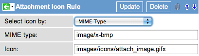

Administering Attachments
| |
Note: This article applies to Fuji. For more current information, see Attachment Administration at http://docs.servicenow.com
The Wiki page is no longer being updated. Please refer to http://docs.servicenow.com for the latest product documentation. |
Contents
- 1 Overview
- 2 Disabling the Drag-and-Drop Feature
- 3 Limiting Attachment File Size
- 4 Requiring a Role to Attach Files
- 5 Restricting File Extensions
- 6 Disabling Attachments on a Table
- 7 Hiding the Attachment [view] Link
- 8 Configuring Attachment Icons
- 9 Attachment Events
- 10 Viewing Attachment Tables
- 11 Enhancements
1 Overview
| |
Note: The latest release that this documentation applies to is Fuji. For documentation on the Geneva release, see Configuring attachment settings. Documentation for later releases is also on docs.servicenow.com. |
Administrators can configure options for how files are uploaded and attached to records.
| |
Note: To learn how to upload attachments to records, see Uploading Attachments. |
2 Disabling the Drag-and-Drop Feature
To disable the drag-and-drop attachment feature:
- Navigate to System Properties > UI Properties.
- Clear the check box for the Allow attachment drag and drop in supported HTML5 browsers property (glide.ui.attachment_drag_and_drop).
- Click Save.
| |
Note: Users can still upload attachments by browsing to the file. |
3 Limiting Attachment File Size
To specify the maximum attachment size:
- Navigate to System Properties > Security.
- Enter a value in the Maximum file attachment size in megabytes property (com.glide.attachment.max_size). Leave the field empty to allow attachments up to a maximum of 1GB. By default, this field is blank.
- Click Save.
The maximum attachment size for email attachments is configured separately.
| |
Warning: Uploading large attachments might lead to issues with the user's active session on the instance. |
4 Requiring a Role to Attach Files
To restrict who can upload attachments:
- Navigate to System Properties > Security.
- In the Attachment limits and behavior section, locate the List of roles (comma-separated) that can create attachments: property (glide.attachment.role).
- Enter one or more roles separated by commas.
- Only roles listed in this property are able to upload attachments to a record. If no roles are entered, then all roles can upload attachments to ServiceNow forms.
- Click Save.
5 Restricting File Extensions
The glide.attachment.extensions property restricts the file extensions that are permissible to upload as attachments. Use this property to improve security by preventing users from uploading harmful files, such as viruses, as attachments. Additionally, this functionality can prevent the use of incompatible file types. For example, Internet Explorer does not support icons in .png format. Note that this property does not restrict files based on the actual file type, but only based on the extension.
To restrict file extensions for attachments:
- Navigate to System Properties > Security.
- In the Attachment limits and behavior section, locate the List of file extensions (comma-separated) that can be attached to documents via the attachment dialog. Extensions should not include the dot (.) e.g. xls,xlsx,doc,docx. Leave blank to allow all extensions. property.
- Enter the file extensions and click Save.
- If no extensions are specified, then all extensions are allowed. However, if any extensions are specified, all unlisted extensions are restricted.
6 Disabling Attachments on a Table
To prevent attachments from being added to records on a specific table:
- Open a record in the table.
- Right-click in the header bar and select the appropriate option for your version:
- In the list of dictionary entries, select the first record in the list (the record with no Column name entry).
- Add no_attachment to the Attributes field, separated by commas from any existing attributes.
- See Dictionary_Attributes for more information.
7 Hiding the Attachment [view] Link
Users can open an attachment by clicking either the file name or the [view] link. The [view] link opens the file from within the browser, which executes JavaScript code as part of the attachment.
To hide the [view] link:
- Add the glide.ui.disable_attachment_view and glide.ui.attachment_popup properties. For instructions on adding properties to the platform, see Adding a Property.
- For the glide.ui.disable_attachment_view property, set the Type to true/false and set the Value to true.
- For the glide.ui.attachment_popup property, set the Type to true/false and set the Value to false.
- To return to the default behavior (enable the link), set the glide.ui.attachment_popup property Value to true.
| |
Note: Users can still view attachments by clicking the file name. |
8 Configuring Attachment Icons
To configure the icon that appears beside an attachment of a particular file type:
- Determine the path of the image file. If desired, upload a new image.
- Navigate to System UI > Attachment Icon Rules.
- Open an existing rule or click New to create a new rule.
- Enter the rule details (see table).
- Attachment icon rule
- Click Update or Submit.
{kind=link}
| Field | Description | ||
|---|---|---|---|
| Select icon by | Select MIME Type or File Extension.
| ||
| MIME type | If Select icon by is MIME Type, enter the MIME type and subtype to associate with the icon separated by a slash (example: application/pdf). | ||
| File extension | If Select icon by is File Extension, enter the file extension to associate with the icon beginning with the period (example: .pdf). | ||
| Icon | Enter the path to the icon image file (example: images/icons/attach_pdf.gifx) |
9 Attachment Events
Uploading, viewing, and deleting files attachments triggers a single event in the platform that can be used for notifications or in scripts. Only one event is created when action is taken on a record with attachments, even when the record has multiple attachments. The following event types are provided:
- attachment.read: An attachment has been read or downloaded.
- attachment.uploaded: An attachment has been uploaded. If multiple attachments are uploaded to a record at one time, only one event will be created.
- attachment.deleted: An attachment has been deleted. This event is also triggered when the record containing the attachment is deleted. If a record is deleted that contains multiple attachments, a separate event is triggered for each attachment in the deleted record.
- attachment.renamed: An attachment has been renamed.
10 Viewing Attachment Tables
When you store an attachment to any table, a record is created in the sys_attachment table that contains attachment metadata, and the file data is stored in the sys_attachment_doc table, in 4k chunks. For example, if you attach a 12k file called My_attachment.pdf, then you would have a sys_attachment entry with 3 related sys_attachment_doc entries.
11 Enhancements
11.1 Dublin
- A new property is available to force downloads of all file types that administrators specify: glide.ui.attachment.force_download_all_mime_types. When this property is enabled, it forces the download of all the MIME types specified in the property, rather than rendering the files in the browser. The most commonly specified file types are text and HTML. This property is not enabled by default. Administrators must add this property in the System Properties [sys_properties] table.